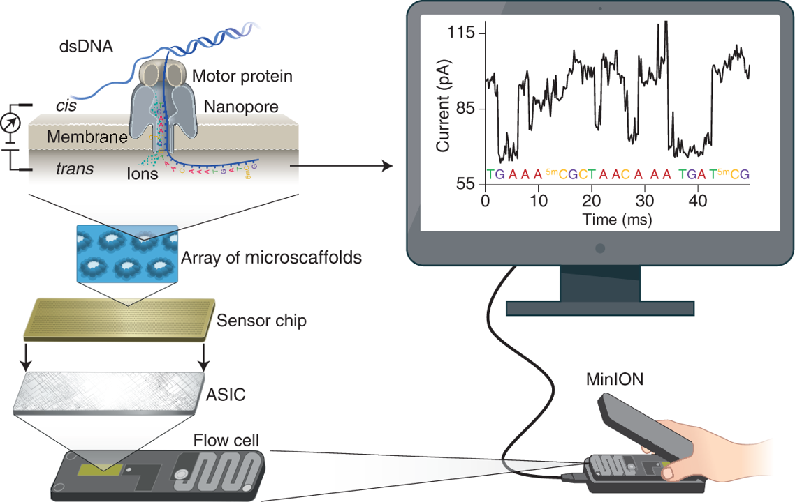

Accurate profiling of forensic autosomal STRs using the Oxford Nanopore Technologies MinION device
Paper
-
Oxford Nanopore Technologies (ONT)
-
Oxford Nanopore Technologies (ONT)

How nanopore works
MinION
Background
In forensic genetic analyses, the high variability of short tandem repeat (
STR) markers is utilized for human identification;Despite the efficacy and dependability of existing typing methods, sequence-level information within and surrounding
STRsis obscured in length-based profiles;As an alternative to conventional capillary electrophoresis (
CE) techniques, forensicSTRtyping with next-generation sequencing (NGS) has gained popularity;NGSdata can identify flanking area SNPs and distinguish isoalleles, revealing up to two times as many alleles thanCEat some loci;
Background
This research evaluates the forensic utility of the newest and smallest accessible NGS platform, the Oxford Nanopore Technologies (
ONT) MinION instrument;Despite the fact that nanopore sequencing on the handheld MinION offers various benefits, including as low setup costs and on-site sample processing, the relatively high error rate and lack of forensic-specific analysis tools has hampered proper profiling across
STRpanels in prior research;STRspy is a simplified approach for obtaining length- and sequence-based
STRallele designations from noisy, error-prone third generation sequencing reads.
Methods
Fig. 1. STR sequencing and profiling with STRspy
Methods
Six NIST traceable standards and one Promega control (female n = 2; male n = 5) ;
Promega PowerSeq 46GY System (PS4600);
- 15 or 30 cycles;
Nanopore library preparation and sequencing;
Purified PCR products were multiplexed and prepared for nanopore sequencing;
vR9.4D flow cells (FLO-MIN106D, ONT);
MinION;
Methods - STRspy
STR sequencing data for 1036 samples published under the STRSeq BioProject (NIST 1036);
STR database used includes alleles for the 22 PowerSeq autosomal loci along with 500 bp flanks from hg19/GRCh37;
STRspy accepts fastq or bam files;
Users are also required to provide bed and fasta files for the STR database;
STRspy executes the following three steps in a per sample manner;
Methods - STRspy
- Basecalled reads are first aligned to the human reference genome (hg19/GRCh37) (
minimap2). Subsequently, the mapped reads are automatically converted and sorted into a bam file (samtools); - Bam file is processed to extract reads that overlap
STRloci of interest based on the locations specified in the user-provided bed file (bedtools). Extracted locus-specific reads are then mapped to the predefined collection of alleles (minimap2).
Methods - STRspy
- Compute the number of reads in the sorted bam (
samtools). Calculates locus-specific normalized read counts. Normalized read counts to rank the STR alleles at each locus and reports either a single allele (homozygous) or the top two alleles (heterozygous) using a threshold of 0.4; xAtlaswas used to detect SNPs within the flanking region in the STR database and region bed file. The vcf file was filtered to keep SNPs with p-value of 0.8 or higher. 30 cycles samples were subsampled to 1% of total mapped reads (samtools).
Methods - STRspy
Workflow
Methods
Guppywas used to basecalling (Q-score > 7);Merged fastq files from the 7 samples amplified (15 and 30 cycles) were processed with STRspy;
Manufacturer-validated genotypes served as the truth values for assessing the STRspy performance.
Results - Benchmarking
Results - Benchmarking
\(Recall(TPR) = \frac{TP}{TP + FN}\)
\(Precision = \frac{TP}{TP+TN}\)
\(F1 score = \frac{2TP}{2TP + FP + FN}\)
STR allele designations
Fig. 3. Heatmap comparison of STRspy predictions to manufacturer-verified length- and sequence-based genotypes.
STRspy resolves isoalleles
STRspy resolves isoalleles.
Genotyping errors
Fig. 4. Genotyping errors. Part 1 False negative genotype due to allele drop out at Penta E for NISTAc.
Genotyping errors
Fig. 4. Genotyping errors. Part 2 - False positive genotype due to stutter artifacts at D22S1045 for the 2800 M.
Genotyping errors
Fig. 4. Genotyping errors. Part 3 - False positive genotype due to stutter artifacts at D22S1045 for the NISTd.
SNP benchmarking
Table 2. SNP benchmarking.
Discussion
Due to insufficient coverage, the 15-cycle dataset was skewed, hence the 30-cycle dataset provided more trustworthy genotypes;
These results show that this portable, scalable, and quick sequencing technique could be very useful in future applications;
Given the great coverage at 30 PCR cycles, a MinION flow cell may be able to sequence more samples;
STRspy profiles STRs with exceptional accuracy using ONT sequencing data;
STRspy used 30-cycle readings on standard R9 nanopore proteins to correctly genotype homopolymer-containing Penta D and Penta E despite ONT sequencing data biases;
Discussion
Reducing the normalization cutoff value from 0.4 to 0.3 yielded the proper genotype, demonstrating that locus-specific normalization thresholds may be useful for assessing low-coverage samples;
The user’s STR database alleles determine STRspy’s genotype predictions;
If sequence-based allele information is available and presented consistently across loci, users can develop or expand STR databases;
These experiments will establish ONT-specific STR profiling methodologies and interpretation standards;
Discussion
Cost limits sequence-based STR typing in routine forensic cases;
Sequencing is expensive, but the ONT MinION technology offers greater resolution than typing methods and shorter turnaround time with on-site tests. These qualities would aid forensic investigations.
Highlights
STRscan be sequenced on the Oxford Nanopore Technologies MinION device;STRspy produces accurate autosomal
STRprofiles from long-read sequencing data;STRspy correctly profiled 22
STRsamplified at 30 PCR cycles across all samples;Isoalleles can be resolved in nanopore sequencing reads when analyzed with STRspy;
SNPsin the flanking regions were detected with > 90% accuracy for the 15-cycle dataset;
References
- https://www.youtube.com/watch?v=Kdsp6soqA7o
- https://github. com/unique379r/strspy
- https://ars.els-cdn.com/content/image/1-s2.0-S1872497321001654-mmc1.pdf
31/05 | Marcel Ferreira